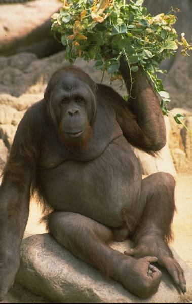

Willkommen | Afrika präsentiert sich
Etymologie
In der Antike bezeichnete der lateinische Name Africa nur das Gebiet der gleichnamigen römischen Provinz im heutigen Tunesien um Karthago. Der Kontinent (zunächst nur Nordafrika westlich des Nils) wurde in der Antike oft Libya genannt. Der Name Africa wurde vom römischen Senator und Feldherrn Scipio Africanus erstmals verwendet und ist vom lateinischen Wort Afer (Plural: Afri) abgeleitet, was so viel wie „Afrikaner, Punier“ bedeutet und seinerseits von einem einheimischen Stamm abgeleitet sein könnte. Andere Deutungsvarianten bezogen den Volksnamen Afer auf das hebräischen ʿafar („Staub“), das griechische aphrike („unkalt“) oder das lateinische aprica („sonnig“).
Geographie

Lage Afrikas in der Welt
Afrika ist im Norden vom Mittelmeer, im Westen vom Atlantik, im Osten vom Indischen Ozean und dem Roten Meer umgeben. Die Küstenlänge beträgt 30.490 km, was gemessen an der großen Fläche relativ wenig ist. Die einzige Landverbindung zu anderen Festlandmassen besteht zu Eurasien an der Stelle der Sinai-Halbinsel, die zwischen Afrika und der Arabischen Halbinsel liegt. Europa liegt Afrika an der Straße von Gibraltar und der Straße von Sizilien am nächsten. Der südlichste Punkt Afrikas ist Kap Agulhas auf 34°50' Süd. Der afrikanische Erdteil ist nur wenig gegliedert; er hat weniger Inseln und Halbinseln als alle anderen Kontinente.
Durch seine Lage beiderseits des Äquators und seine kompakte Form besitzt Afrika die größte zusammenhängende Landmasse der Tropen. 75 % der Fläche Afrikas liegen innerhalb der Wendekreise, die die mathematische Tropengrenze bilden. Der größte Teil Zentral- und Westafrikas ist von tropischem Regenwald bedeckt; das Kongobecken ist nach Amazonien das zweitgrößte Regenwaldgebiet der Erde. Um die Wendekreise sind große Wüsten entstanden, die sich durch Desertifikation ausbreiten; die Sahara im Norden wird nur durch die Flussoase des Nil unterbrochen, im Süden befinden sich die Namib als Nebelwüste und die Kalahari als Trockensavanne. Südlich der Sahara (Sahelzone) und in Ostafrika bis Südafrika hinunter befinden sich riesige Savannengebiete. Im Bereich zweier jährlicher Niederschlagsmaxima breiten sich die Trockenwälder und Feuerökosysteme aus, beispielsweise Mopane, Miombo oder Chipya-Vegetation. Südostafrika ist durch den Einfluss des Monsuns und die großen Täler von Sambesi und Limpopo fruchtbarer.
Der kleinste Staat auf dem Festland, Gambia, ist etwa so groß wie Zypern und der größte, Algerien, ungefähr siebenmal so groß wie Deutschland. Die größte Insel ist Madagaskar, die vor der Südostküste Afrikas im Indischen Ozean (Indik) liegt. Siehe auch: Geographie Afrikas und Wüsten Afrikas
Regionen Afrikas:
- Nordafrika
- Westafrika
- Zentralafrika
- Ostafrika
- Südliches Afrika
Gliederung
Die folgende Unterteilung Afrikas in Regionen[3] wird neben anderen von der UN-Statistikbehörde UNSD verwendet:
- Nordafrika
- Westafrika
- Zentralafrika
- Ostafrika
- Südliches Afrika (zur Unterscheidung vom Staat Südafrika abweichend von den anderen Regionen benannt)
Gewässer
Einzugsgebiete der großen Gewässersysteme Afrikas
Stillgewässer

Es gibt zwei grundlegende Typen von Seen. Zum einen die Beckenseen, die sich flach und weit ausstrecken und ihre Größe durch Verdunstung sehr stark verändern. Ein Beispiel dafür ist der Tschadsee. Zum anderen die Grabenseen, die im Ost- und Zentralafrikanischen Graben liegen und sehr tief sind, dafür aber lang und schmal. Beispiele dafür sind der Malawisee oder der Tanganjikasee.
Fließgewässer
Es gibt auch zwei Arten von Flüssen in Afrika, die einen speisen Beckenseen, sie haben kein großes Gefälle und eine geringe Fließgeschwindigkeit, z. B. der Schari, der den Tschadsee speist, oder der Okavango, der im Okavangodelta versickert und verdunstet. Auf der anderen Seite gibt es die Flüsse, die in das Meer münden, sie weisen ein hohes Gefälle auf und haben dadurch eine hohe Fließgeschwindigkeit, Beispiele sind der Nil, der in das Mittelmeer mündet, Niger, Kongo und Oranje, die in den Südatlantischen Ozean münden, oder der in den Indischen Ozean mündende Sambesi.
Der längste Strom Afrikas und zugleich der längste oder zweitlängste Fluss der Erde, da die Länge des Amazonas – je nach Definition – zwischen 6500 Kilometer und 6800 Kilometer angegeben wird, ist der Nil mit 6671 km. Er mündet in das Mittelmeer. Am Oberlauf des Nils liegt der Victoriasee (68.870 km²), der größte See Afrikas und nach dem Kaspischen Meer und dem Oberen See der flächenmäßig drittgrößte See der Erde.
Der zweitlängste Fluss Afrikas und der wasserreichste des Kontinents ist der Kongo mit 4374 km. Er mündet in den Südatlantik. Ein rechter Nebenfluss des Kongos ist die rund 350 km lange Lukuga, der einzige Abfluss des ostafrikanischen Tanganjikasees. Dieser ist mit 1470 m nach dem Baikalsee der zweittiefste See der Erde.
Der Niger ist nach dem Nil und dem Kongo mit 4184 km Länge der drittlängste Fluss bzw. Strom in Afrika. Nach Verlassen des Kainji-Stausees mündet der Niger in den Südatlantik. Sein Einzugsgebiet beträgt 2.261.763 km².
Der Sambesi ist mit 2736 km der viertlängste Fluss in Afrika und der größte afrikanische Fluss, der in den Indischen Ozean fließt. Das Einzugsgebiet umfasst 1.332.574 km², was etwa der Hälfte des Nil-Einzugsgebietes entspricht.
Der Malawisee mit 29.600 km² zählt mit 706 m zu den tiefsten Seen in Afrika. Sein Abfluss ist der Shire-Fluss, der nach 402 km in den Sambesi mündet.
Grundwasser
Die Grundwasserkarte von Afrika, die das British Geological Survey (BGS) veröffentlichte, zeigt, dass in den meisten bewohnten Gebieten das Wasser sogar mit Handpumpen an die Oberfläche gefördert werden könnte.[4][5]
Gebirge und Berge
Landschaft der Virunga-Vulkane
Im Nordwesten Afrikas zieht sich das geologisch junge Atlas- bzw. Maghreb-Gebirge durch die Staaten Marokko, Algerien und Tunesien, das zusammen mit den Alpen im Zuge der Annäherung der afrikanischen an die eurasische Platte entstanden ist.
Durch den Osten Afrikas zieht sich der Große Afrikanische Grabenbruch, welcher die Fortsetzung des Grabenbruchs unter dem Roten Meer ist und auf eine Abspaltung des Horns von Afrika und Arabiens vom Rest Afrikas hindeutet. Der dabei entstehende Vulkanismus hat unter anderem das Kilimandscharo-Massiv, das höchste Bergmassiv Afrikas, das Ruwenzori-Gebirge und das Mount-Kenya-Massiv geschaffen. Im weiteren Verlauf des Grabenbruchs liegen Turkana-See, Kiwusee, Tanganjikasee und Malawisee sowie der Unterlauf des Sambesis.
Die fünf höchsten Gebirge bzw. Bergmassive mit ihrem jeweils höchsten Berg
| Berg | Höhe | Staat |
|---|---|---|
| Kilimandscharo-Massiv Kibo (Uhuru Peak) | 5895 m | Tansania |
| Mount-Kenya-Massiv Batian | 5199 m | Kenia |
| Ruwenzori-Gebirge Margherita Peak | 5109 m | DR Kongo und Uganda |
| Hochland von Abessinien Ras Daschän | 4533 m | Äthiopien |
| Virunga-Vulkane Karisimbi | 4507 m | Ruanda, DR Kongo und Uganda |
Niederschlagskarte von Afrika
Außerdem zählen der Atlas mit dem Toubkal (4165 m) in Marokko, der Mount Meru (4562,13 m), ein Inselberg in Tansania und der Kamerunberg (4095 m), ein Inselberg in Kamerun, zu den höchsten Gebirgen, Bergmassiven bzw. Bergen des Kontinents.
Geologie
Der größte Teil Afrikas besteht aus sehr alten (präkambrischen) Plattformen, die zumeist von jüngeren Sedimenten der Karoo-Supergruppe überdeckt sind.
Geologisch gehört die Arabische Platte zu Afrika, womit Afrika im Nordosten vom Taurusgebirge im Süden der Türkei und vom Zāgros-Gebirge im Westen des Irans begrenzt wird. Siehe auch: Afriziden
Vegetation und Tierwelt
Vegetationsgebiete Afrikas: dunkelgrün Tropische Regenwälder; rötlich: Wüsten und Halbwüsten, hellere Grüntöne: Savannen; lila: mediterrane Vegetation (zur Legende siehe Weltkarte Vegetation)
Die wichtigsten Vegetationsgebiete des afrikanischen Kontinents stellen einerseits die Regenwälder West- und Zentralafrikas, andererseits die drei großen Wüstengebiete und drittens die dazwischen liegenden Savannen- und Trockenwaldgebiete dar. Dabei ist der zentralafrikanische Regenwaldblock im Bereich des Kongobecken von den Regenwäldern an der Südküste Westafrikas isoliert. Die drei wichtigsten Wüsten beziehungsweise Halbwüsten sind die Namib im Süden, die Sahara im Norden und die Halbwüstengebiete am Horn von Afrika, die jedoch mit der Sahara in Verbindung stehen. Innerhalb der Savannen wird meist zwischen Feuchtsavannen-Waldmosaiken und Trockensavannen unterschieden, die wiederum durch ausgedehnte Waldsavannen voneinander getrennt sind. Diese Waldsavannen werden im Südosten als Miombo, im Nordwesten als Doka bezeichnet. Nördlich der Sahara treten darüber hinaus auch mediterrane Vegetationsformen auf. Typische Hochgebirgsvegetation findet man in Nordafrika im Atlasgebirge, im äthiopischen Bergland sowie vor allem in zahlreichen, teilweise isolierten Bergmassiven Ostafrikas, wie Kilimandscharo, Mount-Kenya-Massiv und Ruwenzori-Gebirge. Eine Besonderheit stellt das Kapgebiet dar, das durch besonderen Artenreichtum auffällt und ein eigenes Florenreich darstellt. Eine weitere besondere Vegetationsform sind die südafrikanischen Karoo-Steppen.[6]
Löwen
Afrika ist bekannt für seine großen Wildtierherden, hier Gnus
Afrika beherbergt zwei Zoogeographische Regionen. Den Großteil bedeckt dabei die Afrotropische Region, die den ganzen Kontinent südwärts der Sahara umfasst, während die Teile nördlich der Sahara der Paläarktischen Region zugeschlagen werden. Dies liegt an zahlreichen Arten Nordafrikas, die auch in Europa und Nordasien vorkommen oder dort nahe Verwandte besitzen. Dazu zählen etwa der Berberhirsch (eine Unterart des Rothirsches) und der mittlerweile ausgestorbene Atlasbär. Die Tierwelt Afrikas, insbesondere südlich der Sahara zeichnet sich vor allem durch einen großen Artenreichtum an Großsäugern aus. Die größten Landsäugerarten des Kontinents sind Afrikanischer Elefant und Waldelefant, Flusspferde und Nashörner. Weitere typische Großtiere stellen Kaffernbüffel, Giraffen, Zebras, zahlreiche Antilopen- und Duckerarten sowie verschiedene Schweine dar. Im Gebiet der Danakilwüste kommen außerdem noch Restbestände des afrikanischen Wildesels, in den Gebirgen Nordafrikas Steinböcke und Mähnenschafe vor. Auch Großraubtiere sind durch Löwen, Leoparden, Geparden, Hyänen und Wildhunde reichhaltig vertreten. Kleinere Räuber sind durch den Erdwolf, verschiedene Schleichkatzen, Mangusten, Katzen, Füchse, Schakale und einige Marder, wie den Honigdachs vertreten. Insbesondere die Zentralafrikanischen Waldgebiete sind Heimat einer großen Vielfalt verschiedener Primatenarten. Dazu zählen Gorillas, Schimpansen, Meerkatzenartige, Galagos und Pottos. Typisch Afrikanische Säugetierordnungen stellen Erdferkel, Schliefer, Rüsselspringer, Otterspitzmäuse und Goldmulle dar, die alle der Gruppe der Afrotheria entstammen. Diese Tiergruppe umfasst auch die Elefanten und Seekühe wie den afrikanischen Manati und den Dugong und hat ihren Ursprung in Afrika. Weit verbreitete Säugerordnungen, die man auch in Afrika findet, sind Fledertiere, Insektenfresser, Nager und Hasen. Die Schuppentiere kommen außer in Afrika auch in Südasien vor.[6] Das größte Reptil des Kontinents ist das Nilkrokodil, der größte Vogel der Afrikanische Strauß.
Die Großtierfauna der afrikanischen Savannen ist zusehends auf einzelne Schutzgebiete beschränkt. Die bekanntesten darunter, wie die Serengeti, der Chobe-Nationalpark oder der Krüger-Nationalpark liegen dabei im östlichen und südlichen Teil des Kontinents. Auch die Lebensräume der Regenwaldbewohner sind im Schwinden begriffen.[6]
Bevölkerung
Ethnolinguistische Gruppen Afrikas (Daten von 1959) Bevölkerungsdichte in Afrika (2005) Entwicklung der Bevölkerung Afrikas (in Millionen)[7] Afrika hat etwa 1,257 Milliarden Einwohner (Stand 2017),[8] wovon die meisten südlich der weitgehend unbesiedelten Wüste Sahara in Schwarzafrika (subsaharisches Afrika) leben. In Nordafrika, wo hauptsächlich Berber und Araber leben, gibt es rund 210 Millionen Einwohner. Für 2050 erwartet die UN 2,5 Milliarden und für 2100 ca. 4,4 Milliarden Einwohner.[9] Der bevölkerungsreichste Staat ist Nigeria mit knapp 180 Millionen Einwohnern. Der bevölkerungsärmste Staat sind die Seychellen mit 80.000 Einwohnern. Die größte Stadt Afrikas ist Kairo (Ägypten) mit ca. 15,7 Millionen Einwohnern, danach folgt Lagos (Nigeria) mit 11,2 Millionen Einwohnern; die drittgrößte Stadt des Kontinents ist Kinshasa (Demokratische Republik Kongo) mit 8,1 Millionen Einwohnern. Siehe auch: Liste der größten Städte Afrikas
Völker
Im Norden Afrikas lebten schon Jahrtausende vor der Ankunft der Araber um das 7. Jahrhundert herum berberische Völker. Diese leben seitdem vor allem in den gebirgigen Regionen des Maghreb, wo sie vor den arabischen Invasoren Zuflucht fanden, um sich im Laufe der folgenden Jahrhunderte aber deutlich mit jenen zu durchmischen und eine eigene maghrebinische Kultur zu schaffen, die einige Unterschiede zur übrigen arabischen Welt aufweist, beispielsweise in der Sprache. Auch die Völker Nordostafrikas, wie z. B. die Amharen sind semitische Völker. Die Sahara wird von nomadisierenden Tuareg bewohnt.
In Westafrika sind die Mande- und Gur-Völker zu nennen. Hausa und Yoruba leben im östlichen Westafrika, Wolof und Fulbe im westlichen Teil.
In Zentral- und Ostafrika sind die Bantu beheimatet, eine aus zahlreichen Völkern bestehende Gruppe. Die Khoisan-Völker im Süden Afrikas zählen zu den indigenen Völkern, wie auch die bereits genannten Berber und Tuareg in der Sahara und die Massai in Ostafrika. Größte Gruppe von im Zuge der Kolonisation eingewanderten Menschen sind die Buren in Südafrika. Moderne Migrationsbewegungen haben Libanesen nach West- sowie Inder und Chinesen nach Ostafrika gebracht. Siehe auch: Indigene Völker Afrikas
Sprachen
→ Hauptartikel: Afrikanische Sprachen
Insgesamt gibt es über 2000 eigenständige afrikanische Sprachen, von denen rund 50 als größere Sprachen gelten, die jeweils von über einer Million Menschen gesprochen werden. Einige der wichtigsten afrikanischen Sprachen sind Swahili, Igbo, Hausa und Fulfulde. Englisch, Französisch und Portugiesisch sind verbreitete Amts- und Verkehrssprachen in vielen afrikanischen Ländern, da diese die Kommunikation mit den vielen kleinen Sprachen erheblich vereinfachen. In Namibia wird auch noch Deutsch gesprochen, in Südafrika[10] genießt es Sonderstatus. Zu den afroasiatischen Sprachen gehören Arabisch, Hausa, Amharisch und Oromisch, zu den Niger-Kongo-Sprachen zählen Bambara, Swahili, Wolof, Yoruba und Zulu. Die Khoisansprachen werden von den gleichnamigen Völkern im Südlichen Afrika gesprochen; charakteristisch für sie sind Klicklaute. Auf Madagaskar werden Austronesische Sprachen wie Malagasy, Howa (Dialekt des Merina) und andere Merina-Dialekte gesprochen. Siehe auch: Liste afrikanischer Sprachen
Religion
→ Hauptartikel: Religion in Afrika und Afrikanische Religionen
In Nordafrika, Ostafrika und Westafrika ist der Islam weit verbreitet. Laut Auswärtigem Amt gehören 44,2 % aller Afrikaner (darunter in Nordafrika Araber und Berber) dem Islam an, laut CIA World Factbook 43,4 %. Daneben gibt es vor allem in West- und Südostafrika eine große Anzahl Menschen, die traditionelle Religionen praktizieren. Man schätzt, dass dies 13 bis 20 % der Afrikaner sind. Die restlichen rund 38 bis 43 % gehören christlichen Konfessionen an. Die Mehrheit der afrikanischen Christen lebt im Süden Afrikas. Eine Sonderrolle spielt die Äthiopisch-Orthodoxe Tewahedo-Kirche, da in Äthiopien das Königreich Aksum das Christentum zur Staatsreligion machte. Außerdem sind unter den nicht-afrikanischen Minderheiten auch Bahai, Judentum und Hinduismus verbreitet.
Gesundheit und Gesundheitsversorgung
Die durchschnittliche Lebenserwartung einer afrikanischen Frau liegt bei 61,9 Jahren, die durchschnittliche Lebenserwartung eines afrikanischen Mannes bei 58,6 Jahren. Damit ist sie weit niedriger als auf anderen Kontinenten (Zeitraum 2010–2015).[11] Afrika ist auch der von HIV/AIDS am stärksten betroffene Kontinent. Etwa 4 % der Bevölkerung sind HIV-positiv (siehe auch: HIV/AIDS in Afrika).[12] Seit etwa 2005 konnten jedoch Fortschritte im Kampf gegen die Epidemie erzielt werden, weshalb die durchschnittliche Lebenserwartung in fast allen Ländern Afrikas wieder steigt.